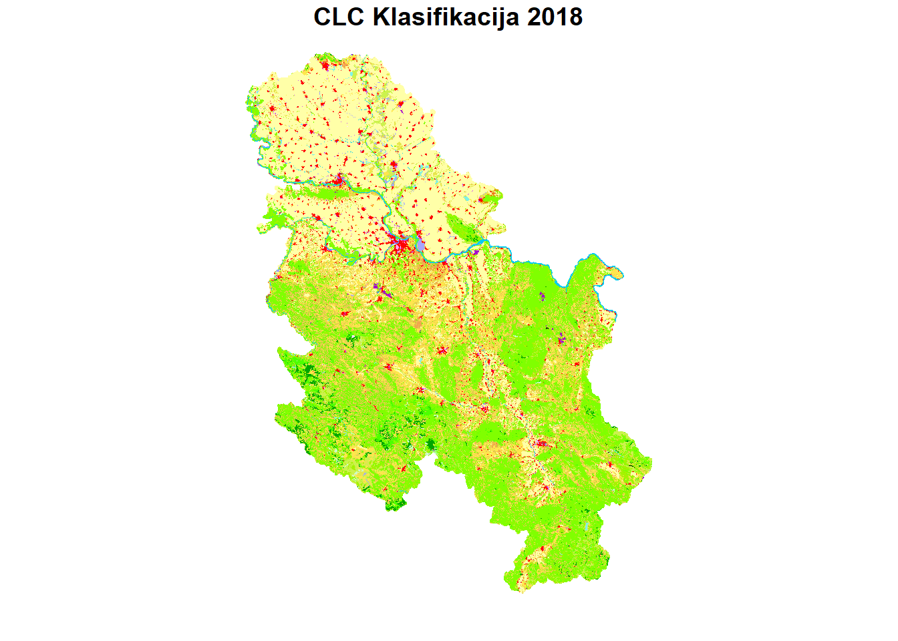
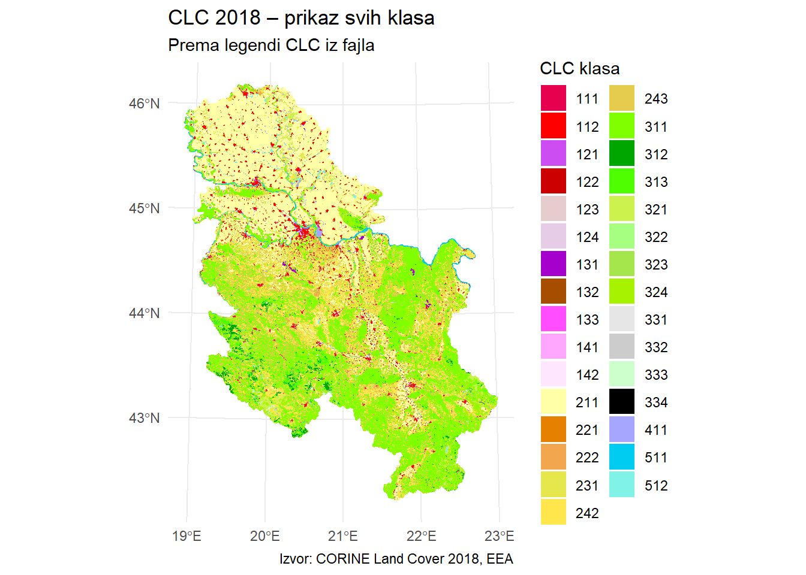
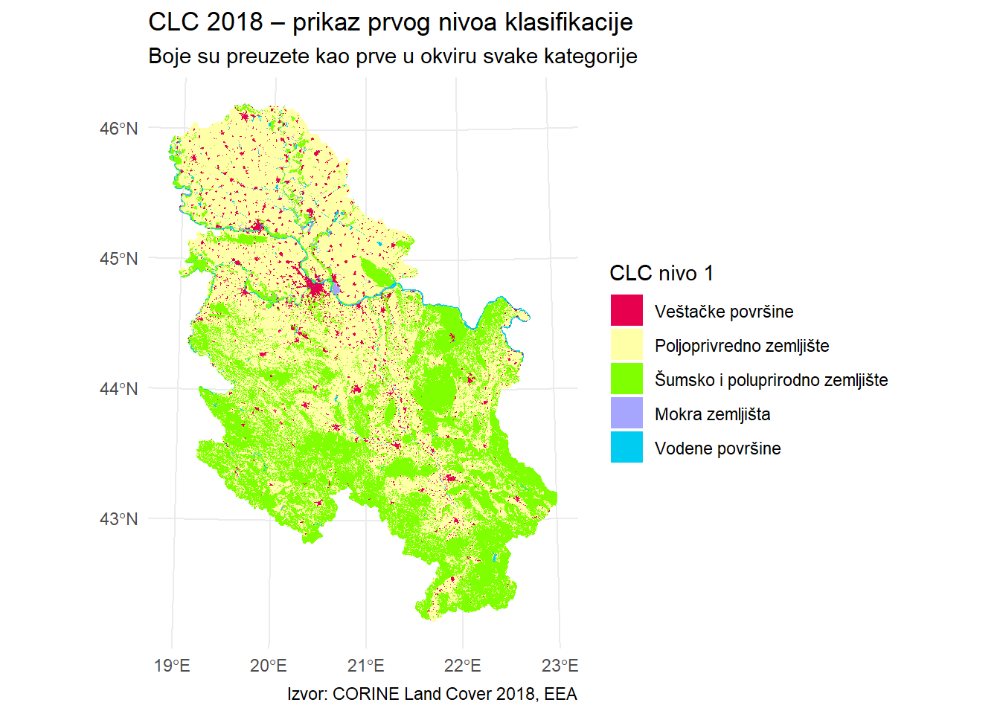
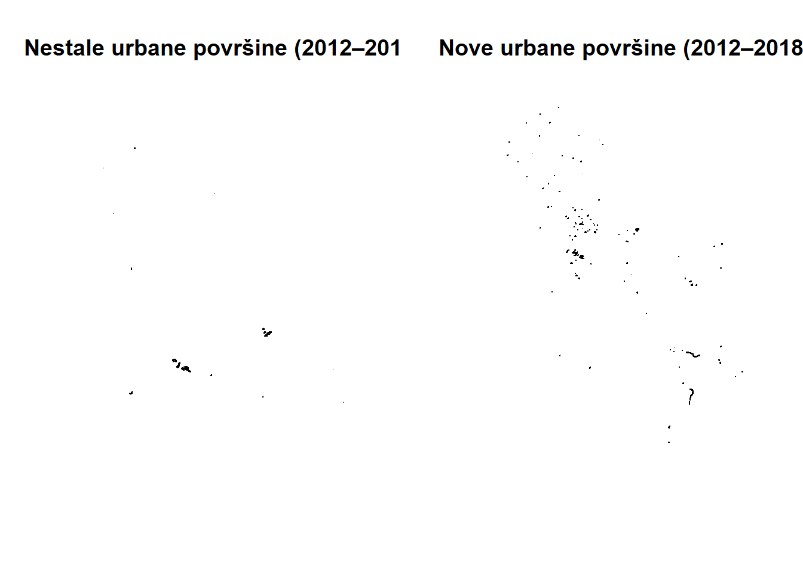
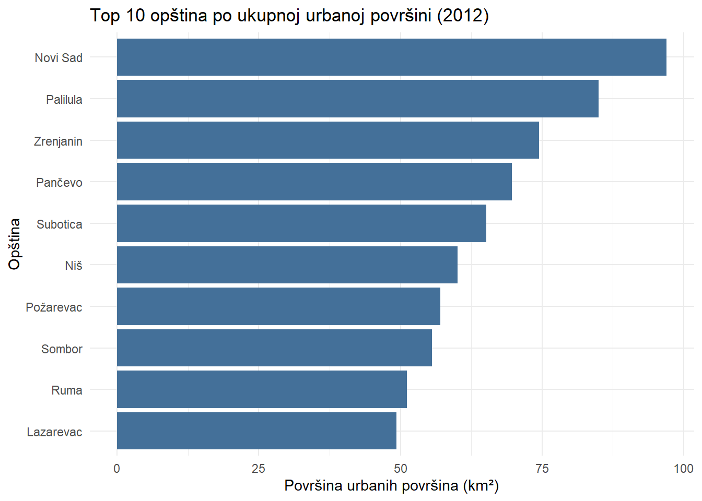
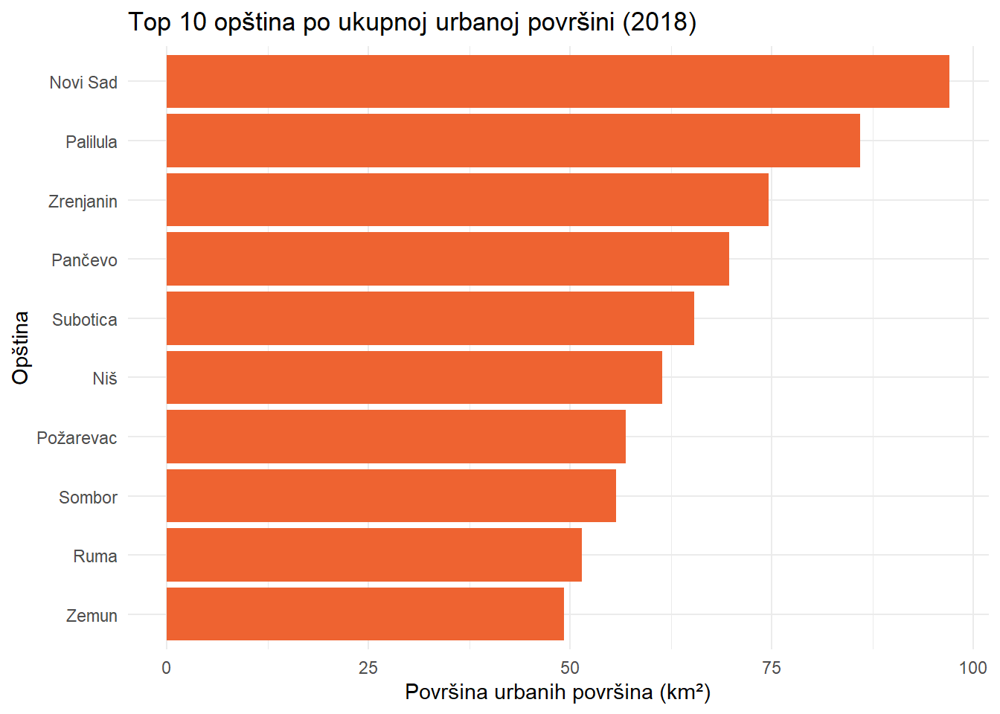

Code
# Učitaj potrebne biblioteke
library(sf) # Rad sa prostornim podacima (Simple Features)
library(tidyverse) # Manipulacija podacima # Vizualizacija (grafici i karte)
library(units) # Rukovanje mernim jedinicama (npr. km²) U ovoj vežbi koristićemo prostorne podatke iz baze CORINE Land Cover (CLC) za 2012. i 2018. godinu, koji pružaju klasifikaciju korišćenja zemljišta na osnovu satelitskih snimaka i vizuelne interpretacije. CLC podaci omogućavaju uvid u prostornu raspodelu različitih kategorija zemljišta, kao što su šumske površine, obradiva zemlja, vodene površine i – u ovom slučaju najvažnije – urbana područja.
Fokus ove analize biće na klasama koje pripadaju grupi veštačkih površina (urbanih područja), odnosno CLC klasa koje počinju cifrom 1 (npr. 111 – kontinuirano urbano``područje``, 112 – diskontinuirano urbano područje`, itd.). Podaci će biti analizirani na nivou administrativnih jedinica – opština u Srbiji.
Cilj vežbe je da se:
identifikuju i izdvoje prostori urbanih površina u obe posmatrane godine,
kvantifikuje njihova površina u okviru svake opštine,
izračuna apsolutna i relativna promena između 2012. i 2018. godine,
i da se rezultati prikažu kartografski.
Na taj način studenti će steći praktično iskustvo u radu sa prostornim (vektorskim) podacima, u filtriranju, agregiranju, prostornim operacijama preseka i spajanja, kao i u interpretaciji rezultata promena u urbanizaciji kroz vreme.
Učitaj potrebne biblioteke: sf, dplyr, ggplot2, units, readr.
# Učitaj potrebne biblioteke
library(sf) # Rad sa prostornim podacima (Simple Features)
library(tidyverse) # Manipulacija podacima # Vizualizacija (grafici i karte)
library(units) # Rukovanje mernim jedinicama (npr. km²) Učitaj CLC podatke iz 2012. i 2018. u odgovarajuće promenljive clc12 i clc18.
# Učitavanje CLC podataka iz 2012.
clc12 <-st_read("C:/Users/user/Dropbox/AnalizaProstornoVremenskihPodataka/03_sf/data/Vektor/clc/CLC12_RS.shp")Reading layer `CLC12_RS' from data source
`C:\Users\user\Dropbox\AnalizaProstornoVremenskihPodataka\03_sf\data\Vektor\clc\CLC12_RS.shp'
using driver `ESRI Shapefile'
Simple feature collection with 34841 features and 6 fields
Geometry type: POLYGON
Dimension: XY
Bounding box: xmin: 331043.4 ymin: 4674468 xmax: 663570 ymax: 5117030
Projected CRS: ETRS89 / UTM zone 34N# Učitavanje CLC podataka iz 2018. godine
clc18 <- st_read("C:/Users/user/Dropbox/AnalizaProstornoVremenskihPodataka/03_sf/data/Vektor/clc/CLC18_RS.shp")Reading layer `CLC18_RS' from data source
`C:\Users\user\Dropbox\AnalizaProstornoVremenskihPodataka\03_sf\data\Vektor\clc\CLC18_RS.shp'
using driver `ESRI Shapefile'
Simple feature collection with 34794 features and 6 fields
Geometry type: POLYGON
Dimension: XY
Bounding box: xmin: 331043.4 ymin: 4674468 xmax: 663570 ymax: 5117030
Projected CRS: ETRS89 / UTM zone 34NUčitaj granice opština Srbije kao opstine. Podaci treba da budu u sf formatu.
# Učitavanje granica opština Srbije
opstine <- st_read("C:/Users/user/Dropbox/AnalizaProstornoVremenskihPodataka/03_sf/data/Vektor/Municipalities.gpkg")Reading layer `Municipalities' from data source
`C:\Users\user\Dropbox\AnalizaProstornoVremenskihPodataka\03_sf\data\Vektor\Municipalities.gpkg'
using driver `GPKG'
Simple feature collection with 161 features and 3 fields
Geometry type: MULTIPOLYGON
Dimension: XY
Bounding box: xmin: 18.80852 ymin: 42.22762 xmax: 22.97898 ymax: 46.1894
Geodetic CRS: WGS 84Proveri CRS (koordinatne sisteme-projekcije) svih slojeva. Ako nisu isti, preklopi ih u jedinstven CRS, UTM za Srbiju.
# Provera CRS-ova
st_crs(clc12)$proj4string # EPSG:25834[1] "+proj=utm +zone=34 +ellps=GRS80 +towgs84=0,0,0,0,0,0,0 +units=m +no_defs"st_crs(clc18)$proj4string # EPSG:25834[1] "+proj=utm +zone=34 +ellps=GRS80 +towgs84=0,0,0,0,0,0,0 +units=m +no_defs"st_crs(opstine)$proj4string # EPSG:4326[1] "+proj=longlat +datum=WGS84 +no_defs"# Ako CRS opštine nije isti, transformiši ga u isti CRS kao CLC slojevi:
opstine <- st_transform(opstine, crs = st_crs(clc12))
# Provera ponovo
st_crs(opstine)$proj4string # EPSG:25834[1] "+proj=utm +zone=34 +ellps=GRS80 +towgs84=0,0,0,0,0,0,0 +units=m +no_defs"Napravi kartu CLC sloja (npr. sa plot() i gglot), koristi boje iz clc_legend.csv podatka. Rešiti kao što je bilo objašnjeno u na predavanjima.
# Učitavanje legende
clc_legend <- read_csv("C:/Users/user/Dropbox/AnalizaProstornoVremenskihPodataka/03_sf/data/clc_legend.csv")Rows: 44 Columns: 6
── Column specification ────────────────────────────────────────────────────────
Delimiter: ","
chr (4): LABEL1, LABEL2, LABEL3, RGB
dbl (2): GRID_CODE, CLC_CODE
ℹ Use `spec()` to retrieve the full column specification for this data.
ℹ Specify the column types or set `show_col_types = FALSE` to quiet this message.# Pretvori kod u karakter radi lakšeg spajanja
clc18 <- clc18 |>
mutate(CODE_18 = as.character(CODE_18))
clc_legend <- clc_legend |>
mutate(Color = sapply( RGB, function(rgb_str) {
# Korak 1: Razdvajanje RGB stringa na komponente
rgb_vals <- strsplit(rgb_str, "-") |> unlist() |> as.numeric()
# Korak 2: Konverzija u hex kod (0-255 → 0-1)
rgb(rgb_vals[1]/255, rgb_vals[2]/255, rgb_vals[3]/255, maxColorValue = 1)
} # kraj funkcije unutar sapply petlje
)# zatvaramo sapply
)# zatcaramo mutate
# Spajanje CLC podataka sa legendom
# Treba ih svesti na isti tip
clc_legend$CLC_CODE <- as.character(clc_legend$CLC_CODE)
# Spajanje `sf_obj` sa lookup tabelom na osnovu CODE_18 i CLC_CODE
clc18 <- left_join(clc18, clc_legend, by = c("CODE_18" = "CLC_CODE"))
# Spajanje `sf_obj` sa lookup tabelom na osnovu CODE_12 i CLC_CODE
clc12 <- left_join(clc12, clc_legend, by = c("CODE_12" = "CLC_CODE"))
# Klasični `plot()` sa bojama iz lookup tabele
plot(clc18["CODE_18"], col = clc18$Color, border = NA, main = "CLC Klasifikacija 2018")
# Napravi kartu
ggplot(clc18) +
geom_sf(aes(fill = CODE_18), color = NA) +
scale_fill_manual(
values = setNames(clc_legend$Color, clc_legend$CLC_CODE),
name = "CLC klasa"
) +
theme_minimal() +
labs(title = "CLC 2018 – prikaz svih klasa",
subtitle = "Prema legendi CLC iz fajla",
caption = "Izvor: CORINE Land Cover 2018, EEA")
# # Dodatna obrada legende
#
# ggplot(clc18) +
# geom_sf(aes(fill = LABEL3), color = NA) +
# scale_fill_manual(
# values = setNames(clc_legend$Color, clc_legend$LABEL3),
# name = "CLC klasa"
# ) +
# theme_minimal() +
# labs(title = "CLC 2018 – prikaz svih klasa",
# subtitle = "Prema legendi CLC iz fajla",
# caption = "Izvor: CORINE Land Cover 2018, EEA")Prikaži prvi pregled CLC sloja (npr. sa plot() i gglot), ali tako da budu prikazani samo prvi nivoi klasifikacije (npr. 1, 2, 3…), koristi boje iz clc_legend.csv podatka. Koristiclc18 objekat.
| Kod | Naziv kategorije (srpski) | Naziv kategorije (engleski) |
|---|---|---|
| 1 | Veštačke površine | Artificial surfaces |
| 2 | Poljoprivredno zemljište | Agricultural areas |
| 3 | Šumsko i poluprirodno zemljište | Forest and semi-natural areas |
| 4 | Mokra zemljišta | Wetlands |
| 5 | Vodene površine | Water bodies |
# Prva boja po LABEL1 (nivo 1 klasifikacije)
nivoi1 <- clc_legend |>
group_by(LABEL1) |>
slice(1) |>
ungroup() |>
mutate(
level1 = str_sub(CLC_CODE, 1, 1)
) |> rename(Color1 = Color) |>
select(level1, LABEL1, Color1) |> arrange(order(level1))
nivoi1$naziv = c("Veštačke površine", "Poljoprivredno zemljište", "Šumsko i poluprirodno zemljište", "Mokra zemljišta", "Vodene površine")
# Dodaj level1 kolonu u CLC sloj
clc18 <- clc18 |>
mutate(level1 = str_sub(CODE_18, 1, 1))
# Pridruži i postavi nivoe faktora
clc18 <- clc18 |>
left_join(nivoi1[, c("level1", "naziv", "Color1")], by = "level1") |>
mutate(naziv = factor(naziv, levels = nivoi1$naziv))
# Karta sa LABEL1 kao legendom i bojama iz prve pojave
ggplot(clc18) +
geom_sf(aes(fill = naziv), color = NA) +
scale_fill_manual(
values = setNames(nivoi1$Color1, nivoi1$naziv),
name = "CLC nivo 1"
) +
theme_minimal() +
labs(
title = "CLC 2018 – prikaz prvog nivoa klasifikacije",
subtitle = "Boje su preuzete kao prve u okviru svake kategorije",
caption = "Izvor: CORINE Land Cover 2018, EEA"
)
Filtriraj iz clc12 samo klase koje počinju sa 1 (urbane površine). Sačuvaj kao urb2012.
urb12 <- clc12 |>
mutate(CODE_12= as.character(CODE_12)) |>
filter(str_starts(CODE_12, "1"))Filtriraj iz clc18 na isti način i sačuvaj kao urb18.
urb18 <- clc18 |>
mutate(CODE_18 = as.character(CODE_18)) |>
filter(str_starts(CODE_18, "1"))Koliko poligona ima u urb12, a koliko u urb18?
tibble(
godina = c(2012, 2018),
broj_poligona = c(nrow(urb12), nrow(urb18))
)# A tibble: 2 × 2
godina broj_poligona
<dbl> <int>
1 2012 2505
2 2018 2526Prati promene u urbanim površinama na teritoriji Srbije između 2012. i 2018. godine korišćenjem prostornih GIS operacija (sf paket).
Korišćenjem funkcije st_difference():
urb18, ali ne u urb12)urb12, ali ne i u urb18)Komentariši prostorne obrasce dobijenih promena.
# Prostorna razlika: nove urbane površine (2018 koje nisu postojale 2012)
urb_nove <- st_difference(st_union(urb18), st_union(urb12))
# Prostorna razlika: nestale urbane površine (2012 koje ne postoje 2018)
urb_nestale <- st_difference(st_union(urb12), st_union(urb18))
# Prikaz rezultata
par(mfrow = c(1, 2))
plot(urb_nestale, col = "red", main = "Nestale urbane površine (2012–2018)", key.pos = NULL, reset = FALSE)
plot(urb_nove, col = "green", main = "Nove urbane površine (2012–2018)", key.pos = NULL, reset = FALSE)
par(mfrow = c(1, 1)) # Vraćanje na standardni prikazDodaj novu kolonu povrsina_km2 u urb12 koristeći st_area() i pretvori jedinicu u km².
urb12 <- urb12 |>
mutate(povrsina_km2 = set_units(st_area(geometry), "km^2") |> drop_units())Isto uradi i za urb18.
urb18 <- urb18 |>
mutate(povrsina_km2 = set_units(st_area(geometry), "km^2") |> drop_units())Izračunaj ukupnu površinu urbanih površina u 2012. i 2018. za celu Srbiju.
# Ukupna urbana površina u 2012.
ukupno_2012 <- sum(urb12$povrsina_km2, na.rm = TRUE)
# Ukupna urbana površina u 2018.
ukupno_2018 <- sum(urb18$povrsina_km2, na.rm = TRUE)
# Prikaz rezultata
tibble(
godina = c(2012, 2018),
ukupna_urbana_povrsina_km2 = c(ukupno_2012, ukupno_2018)
)# A tibble: 2 × 2
godina ukupna_urbana_povrsina_km2
<dbl> <dbl>
1 2012 2927.
2 2018 2944.Izračunaj i prikaži tabelu sa brojem urbanih poligona i ukupnom površinom urbanih područja u 2012. i 2018. godini.
Na osnovu toga, izračunaj prosečnu površinu jednog urbanog poligona u obe godine.
tibble(
godina = c(2012, 2018),
broj_poligona = c(nrow(urb12), nrow(urb18)),
ukupna_povrsina_km2 = c(sum(urb12$povrsina_km2, na.rm = TRUE),
sum(urb18$povrsina_km2, na.rm = TRUE))
) |>
mutate(prosecna_povrsina_km2 = ukupna_povrsina_km2 / broj_poligona)# A tibble: 2 × 4
godina broj_poligona ukupna_povrsina_km2 prosecna_povrsina_km2
<dbl> <int> <dbl> <dbl>
1 2012 2505 2927. 1.17
2 2018 2526 2944. 1.17Spoji urb12 sa opštinama pomoću st_intersection() i sačuvaj rezultat kao u12_int.
u12_int <- st_intersection(urb12, opstine)Warning: attribute variables are assumed to be spatially constant throughout
all geometriesAgregiraj podatke po opštini: za svaku opštinu saberi površine urbanih klasa iz 2012. Na osnovu agregiranih podataka o urbanim površinama iz 2012. godine (urb_po_opstini_2012), prikaži 10 opština sa najvećom ukupnom površinom urbanih područja (suma svih urbanih poligona u km²).
# Dodaj kolonu sa površinom u km²
u12_int <- u12_int |>
mutate(povrsina_km2 = set_units(st_area(geometry), "km^2") |> drop_units())
# Agregacija po opštini
urb_po_opstini_2012 <- u12_int |>
group_by(Name) |>
summarise(ukupna_urbana_2012 = sum(povrsina_km2), .groups = "drop")
# Top 10 opština sa najvećom urbanom površinom
top10_urb_2012 <- urb_po_opstini_2012 |>
arrange(desc(ukupna_urbana_2012)) |>
slice_head(n = 10)
# Bar grafikon
ggplot(top10_urb_2012, aes(x = reorder(Name, ukupna_urbana_2012), y = ukupna_urbana_2012)) +
geom_col(fill = "#447099") +
coord_flip() +
theme_minimal() +
labs(
title = "Top 10 opština po ukupnoj urbanoj površini (2012)",
x = "Opština",
y = "Površina urbanih površina (km²)"
)
Ponovi isti postupak za 2018. sloj. Sačuvaj kao urb_po_opstini_2018.
# Prostorni presek urbanih površina 2018. sa opštinama
u18_int <- st_intersection(urb18, opstine)Warning: attribute variables are assumed to be spatially constant throughout
all geometries# Dodavanje kolone sa površinom u km²
u18_int <- u18_int |>
mutate(povrsina_km2 = set_units(st_area(geometry), "km^2") |> drop_units())
# Agregacija po opštini
urb_po_opstini_2018 <- u18_int |>
group_by(Name) |>
summarise(ukupna_urbana_2018 = sum(povrsina_km2), .groups = "drop")
# Top 10 opština u 2018. po urbanoj površini
top10_urb_2018 <- urb_po_opstini_2018 |>
arrange(desc(ukupna_urbana_2018)) |>
slice_head(n = 10)
# Bar grafikon
ggplot(top10_urb_2018, aes(x = reorder(Name, ukupna_urbana_2018), y = ukupna_urbana_2018)) +
geom_col(fill = "#EE6331") +
coord_flip() +
theme_minimal() +
labs(
title = "Top 10 opština po ukupnoj urbanoj površini (2018)",
x = "Opština",
y = "Površina urbanih površina (km²)"
)
Napravi jedan objekat koji sadrži podatke o urbanim područijima za obe godine (urb_po_opstini_2012 i urb_po_opstini_2018), tako da se može lako uporediti promena u urbanim površinama po opštinama. Koristi left_join() ili full_join() da spojiš podatke, ili neki drugi način. Izrazi i promene u procentima i apsolutnim vrednostima. Napravi grafičke prikaze promena u urbanim površinama po opštinama.
Kratko opiši koje promene si uočio u urbanim područjima u Srbiji na osnovu dobijenih karata i analiza.